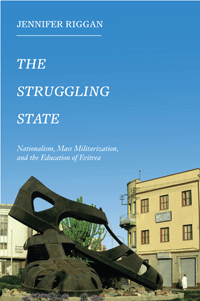

<body bgcolor="#FFFFFF" text="#000000" link="#0000FF" vlink="#CC0000" alink="#CC0000"><center><hr width="350" size="1" align="center" noshade><p>
<i>Examining Eritrean teachers’ paradoxical role of educating students forced into the military</i>
<br><hr width="350" size="1" align="center" noshade><p><a href="https://cdcshoppingcart.uchicago.edu/Cart/ChicagoBook.aspx?ISBN=&&PRESS=temple" target="_top">Buy this book!</a> | <a href="https://cdcshoppingcart.uchicago.edu/Cart/Cart.aspx?PRESS=temple" target="_top">View Cart</a> | <a href="https://cdcshoppingcart.uchicago.edu/Cart/Cart.aspx?PRESS=temple" target="_top">Check Out</a></p><p></p></center><!--none//--><h1>The Struggling State</h1>
<H2>Nationalism, Mass Militarization, and the Education of Eritrea</H2>
<h3>Jennifer Riggan</h3>
<p class="info">cloth: $69.50, Feb 16<BR>EAN:&nbsp;978-1-4399-1270-6<BR><font color=#990033>Not Yet Published Preorder</FONT><font size=-7><br>&nbsp;</font></p><p class="info">e-book: $35.00, Feb 16<BR>EAN:&nbsp;978-1-4399-1272-0<BR><font color=#990033>Not Yet Published Preorder</FONT><font size=-7><br>&nbsp;</font></p></p></td></tr></table>
<BR> <p class="info">258 pp<BR> 6 x 9<BR> <p class="info"><font size=-7>&nbsp;</font></p><p class="info">
</P><BLOCKQUOTE><p>
“The Struggling State<i>&nbsp;makes important connections between schools as public institutions that create citizens and processes of militarization that similarly construct national subjects and define their relationship to the state.&nbsp;Riggan&nbsp;explores the role of public education and contests over the purposes that intellectual training should serve. A significant and interesting contribution, this ethnography provides a glimpse of everyday realities usually hidden behind official statements and national propaganda of the ruling party or behind the alarming summary reports of Human Rights Watch and other non-governmental organizations</i>.”—<b>Victoria Berna</b>l, Professor of Anthropology at the University of California, Irvine
<br></BLOCKQUOTE>
<p>
A 2003 law in Eritrea, a notoriously closed-off, heavily militarized, and authoritarian country, mandated an additional year of school for all children and stipulated that the classes be held at Sawa, the nation’s military training center. As a result, educational institutions were directly implicated in the making of soldiers, putting Eritrean teachers in the untenable position of having to navigate between their devotion to educating the nation and their discontent with their role in the government program of mass militarization.<br>
<p>In her provocative ethnography, <i>The Struggling State, </i>Jennifer Riggan examines the contradictions of state power as simultaneously oppressive to and enacted by teachers. Riggan, who conducted participant observation with teachers in and out of schools, explores the tenuous hyphen between nation and state under lived conditions of everyday authoritarianism.<br>
<p><i>The Struggling State </i>shows how the hopes of Eritrean teachers and students for the future of their nation have turned to a hopelessness in which they cannot imagine a future at all.
<br>
<P CLASS="top"><A HREF="#top">BACK TO TOP</A></P>&nbsp;
<BR>&nbsp;
<h2>Reviews</h2>
<p>
“The Struggling State<i>&nbsp;is a fascinating long-term and in-depth study of the work and perceptions of public school teachers in Eritrea.&nbsp;Riggan&nbsp;has a solid understanding of the complex historical, political, and social context. Writing from a unique perspective, she digs deep into not only the role of teachers in this process but also their perception of themselves as citizens, as leaders, and as guardians of the values of the nation (not necessarily the state).&nbsp;Riggan’s methodology and detailed discussions of how the state has used militarization and education to foment the twin ideas of Eritrean exceptionalism and the merit of martyrdom make this book stand out</i>.”—<b>Pamela DeLargy</b>, Office of the UN Special Representative for Migration
<br />
<br>
<P CLASS="top"><A HREF="#top">BACK TO TOP</A></P>&nbsp;<P>
<h2>Contents</h2><p>
Acknowledgments<br>
<p> Introduction: Everyday Authoritarianism, Teachers, and the Decoupling of Nation and State<br>
<p>1 Struggling for the Nation: Contradictions of Revolutionary Nationalism<br>
<p>2 “It Seemed like a Punishment”: Coercive State Effects and the Maddening State<br>
<p>3 Students or Soldiers? Troubled State Technologies and the Imagined Future of Educated Eritrea<br>
<p>4 Educating Eritrea: Disorder, Disruption, and Remaking the Nation<br>
<p>5 The Teacher State: Morality and Everyday Sovereignty over Schools<br>
<p> Conclusion: Escape, Encampment, and the Alchemy of Nationalism<br>
<p> Notes
<br /> References
<br /> Index
<br>
<P CLASS="top"><A HREF="#top">BACK TO TOP</A></P>
</P><BR>&nbsp;
<H2>About the Author(s)</H2><p>
<b>Jennifer Riggan </b>is Associate Professor of International Studies in the Department of Historical and Political Studies at Arcadia University.
<br>
<P CLASS="top"><A HREF="#top">BACK TO TOP</A></P>
<p><h2>Subject Categories</h2><A HREF="/tempress/african.html" TARGET="_top">African Studies</a><BR><A HREF="/tempress/anthropology.html" TARGET="_top">Anthropology</a><BR><A HREF="/tempress/education.html" TARGET="_top">Education</a><BR><A HREF="/tempress/political.html" TARGET="_top">Political Science and Public Policy</a>
</p>
<P><I><a href="" onMouseOver="window.status='Click for other books in this series!'; return true;" onMouseOut="window.status="; return true;" target="_top”>
</p></p>
<p align="center"><a href="https://cdcshoppingcart.uchicago.edu/Cart/ChicagoBook.aspx?ISBN=&&PRESS=temple" target="_top">Buy this book!</a> | <a href="https://cdcshoppingcart.uchicago.edu/Cart/Cart.aspx?PRESS=temple" target="_top">View Cart</a> | <a href="https://cdcshoppingcart.uchicago.edu/Cart/Cart.aspx?PRESS=temple" target="_top">Check Out</a></p><p><font face="Arial" size="1"><a href="copyright.html" onMouseOver="window.status='Web Copyright Policy';return true;" onMouseOut="window.status=''" title="Web Copyright Policy">&copy;</a> <a href="http://www.temple.edu" target="new" onMouseOver="window.status='Link to Temple University home page';return true;" onMouseOut="window.status=''" title="Link to Temple University home page">Temple University</a>. All Rights Reserved. http://www.temple.edu/tempress/titles/2371_reg.html</font></p>